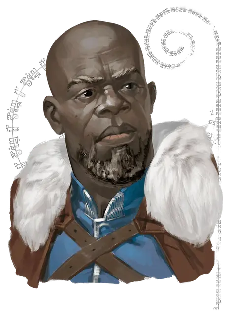

Маркхэм Саутвелл
Markham Southwell
Средний Гуманоид (Человек тёрами), законно-добрый, именной НИП

Класс Доспеха 17 (наборный доспех)
Хиты 58 (9к8 + 18)
Скорость 30 футов
| мод | спас | ||
|---|---|---|---|
| СИЛ | 15 | +2 | +2 |
| ЛОВ | 13 | +1 | +1 |
| ТЕЛ | 14 | +2 | +2 |
| мод | спас | ||
|---|---|---|---|
| ИНТ | 11 | +0 | +0 |
| МДР | 16 | +3 | +3 |
| ХАР | 14 | +2 | +2 |
Навыки Восприятие +5, Выживание +5
Чувства пассивное Восприятие 15
Языки Общий
Опасность 0
Бонус мастерства +2
Особенности
Информация для отыгрыша. Шериф Брин Шандера Маркхэм - это немногословный мускулистый мужчина приятной внешности. Нет ничего более важного для него, чем защита долины Ледяного ветра. Он судит других по их поступкам, а не словам.
Идеал. : «Каждый заслуживает того, чтобы к нему относились с уважением.»
Привязанность. : «Дювесса - прирожденный лидер, но ей требуется помощь. Это и есть моя работа.»
Слабость. : «Я глубоко храню свои эмоции и меня не интересует пустая болтовня.»
Действия
Мультиатака. Маркхэм совершает две рукопашных атаки.
Длинный меч. . Рукопашная атака оружием: +4 к попаданию, досягаемость 5 фт., одно существо. Попадание: 6 (1к8+2) рубящий урон или 7 (1к10+2), если использовать меч двумя руками.
Тяжёлый арбалет. . Дальнобойная атака оружием: +3 к попаданию, дистанция 100/400 фт., одна цель. Попадание: 6 (1к10+1) колющий урон. Маркхэм носит с собой 10 болтов для арбалета.